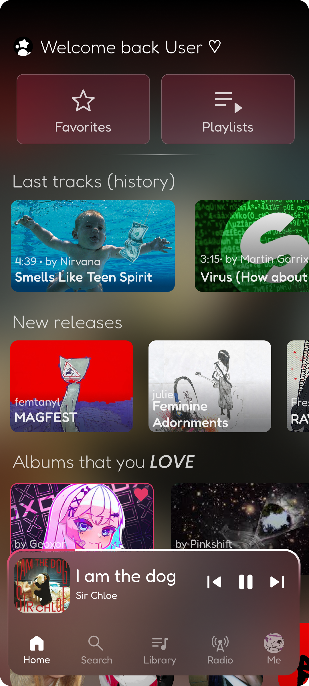
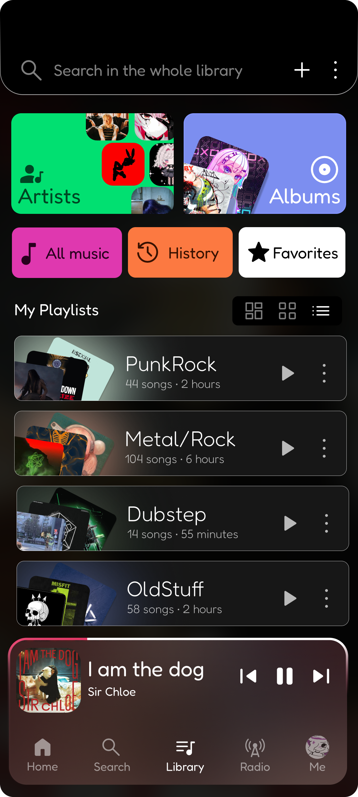
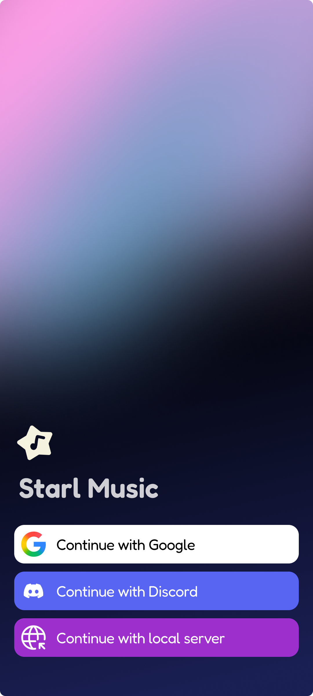

A super-lightweight, local and private mobile music platform, plays music and videos from other platforms and supports offline features.
Connect instantly to a ready-to-use public server and start streaming without extra setup.
Follow synced, real-time lyrics while music plays, with smooth scrolling and offline support.
Show your listening activity with Discord Rich Presence and share playback with friends.
Run your own Starl server locally for private syncing, control, and full ownership of your data.
A clean, distraction-free interface that keeps focus on your music and key actions.
Built for speed with quick startup, responsive controls, and lightweight performance.

Quick access to recent tracks, recommended mixes, and the current playback queue — everything you need to pick up where you left off.
Organize your local collection, create playlists, and quickly search across all your music and videos.


Secure sign-in and server connection settings for syncing with your Starl Server — keep control of your data.